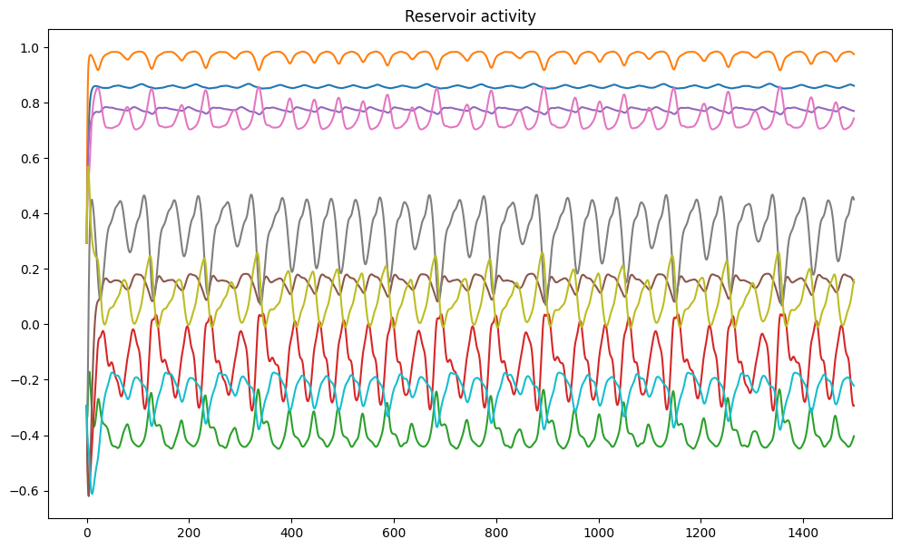

import numpy as np
import matplotlib.pyplot as plt
import water_tank as wtMackey-Glass autoregression
The Mackey-Glass equations are delay differential equations that exhibit chaotic behavior, i.e. they cannot be predict accurately for a long period of time.
\frac{d x(t)}{dt} = \beta \, \frac{x(t - \tau)}{1 + x(t - \tau)^n} - \gamma \, x(t)
To check this, we use reservoirpy (https://reservoirpy.readthedocs.io) to generate two time series with very close initial conditions (\epsilon = 10^{-6}). After roughly two seconds of simulation, the two time series start to diverge.
from reservoirpy.datasets import mackey_glass
mg1 = mackey_glass(4000, x0=1.2)
mg2 = mackey_glass(4000, x0=1.2 + 1e-6)
plt.figure(figsize=(12, 7))
plt.plot(mg1, label="first")
plt.plot(mg2, label="second")
plt.plot(mg1 - mg2, label="difference")
plt.legend()
plt.xlabel("Time (ms)")
plt.title("Mackey-Glass time series")
plt.show()For the autoregression task, we generate a time series, normalize it and create supervised targets to predict the value of the signal at time t + 1 given the past.
# Generate time series
mg = mackey_glass(4000, x0=1.2)
# Normalize between -1 and 1
mg = 2.0 * (mg - mg.min()) / (mg.max() - mg.min()) - 1.0
# The task is to predict the next value
X = mg[:-1, 0]
Y = mg[1:, 0]
plt.figure(figsize=(12, 7))
plt.plot(X)
plt.xlabel("Time (ms)")
plt.title("Mackey-Glass time series")
plt.show()Using water-tank
We now create an echo-state network with:
- an input layer with one neuron
- a reservoir with N tanh neurons.
- a readout layer with one neuron.
The weight matrices are initialized classically. Note that the recurrent and readout neurons both use biases. The readout weights are trained online using the recursive least squares (RLS) method.
Two methods are implemented in the class: a training method calling the learning rule, and an autoregressive method plugging the output of the networks back into its input.
class ESN(object):
def __init__(self, N, N_in, N_out, g, tau, sparseness):
# Input population
self.inp = wt.layers.StaticInput(size=N_in)
# Reservoir
self.rc = wt.layers.RecurrentLayer(size=N, tau=tau)
# Readout
self.readout = wt.layers.LinearReadout(size=N_out)
# Input projection
self.inp_proj = wt.connect(
pre = self.inp,
post = self.rc,
weights = wt.random.Bernouilli([-1.0, 1.0], p=0.5),
bias = None,
sparseness = 0.1
)
# Recurrent projection
self.rec_proj = wt.connect(
pre = self.rc,
post = self.rc,
weights = wt.random.Normal(0.0, g/np.sqrt(sparseness*N)),
bias = wt.random.Bernouilli([-1.0, 1.0], p=0.5), # very important
sparseness = sparseness
)
# Readout projection
self.readout_proj = wt.connect(
pre = self.rc,
post = self.readout,
weights = wt.random.Const(0.0),
bias = wt.random.Const(0.0), # learnable bias
sparseness = 1.0 # readout should be dense
)
# Learning rules
self.learningrule = wt.rules.RLS(
projection=self.readout_proj,
delta=1e-6
)
# Recorder
self.recorder = wt.Recorder()
@wt.measure
def train(self, X, Y, warmup=0):
for t, (x, y) in enumerate(zip(X, Y)):
# Inputs/targets
self.inp.set(x)
# Steps
self.rc.step()
self.readout.step()
# Learning
if t >= warmup:
self.learningrule.train(
error = y - self.readout.output()
)
# Recording
self.recorder.record({
'rc': self.rc.output(),
'readout': self.readout.output(),
})
@wt.measure
def autoregressive(self, duration):
for _ in range(duration):
# Autoregressive input
self.inp.set(self.readout.output())
# Steps
self.rc.step()
self.readout.step()
# Recording
self.recorder.record({
'rc': self.rc.output(),
'readout': self.readout.output()
})N_in = 1 # number of inputs
N_out = 1 # number of outputs
N = 200 # number of neurons
g = 1.25 # scaling factor
tau = 3.3 # time constant
sparseness = 0.1 # sparseness of the recurrent weights
net = ESN(N, N_in, N_out, g, tau, sparseness)We train the reservoir for 500 time steps and let it predict the signal autoregressively for 1000 steps.
# Training / test
d_train = 500
d_test = 1000
# Supervised training
net.train(X[:d_train], Y[:d_train], warmup=0)
# Autoregressive test
net.autoregressive(duration=d_test)
data = net.recorder.get()Execution time: 70 ms
Execution time: 38 msThe training error becomes quickly very small. When predicting the time series autoregressively, the predictions are precise for around 200 steps, before starting to diverge.
plt.figure(figsize=(12, 7))
plt.subplot(211)
plt.title("Autoregression with water_tank")
plt.plot(Y[:d_train+d_test], label='ground truth')
plt.plot(data['readout'][:d_train], label='prediction (training)')
plt.plot(np.linspace(d_train, d_train+d_test, d_test), data['readout'][d_train:], label='prediction (test)')
plt.legend()
plt.subplot(212)
plt.plot(Y[:d_train+d_test] - data['readout'][:], label='error')
plt.legend()
plt.show()It is interesting to note that, for the autoregression to work correctly, the input biases are critical. They have the effect that many reservoir neurons are saturated (+1 or -1) and only a few are in the “useful” region and change their sign.
plt.figure(figsize=(12, 7))
plt.title("Reservoir activity")
for i in range(10):
plt.plot(data['rc'][:, i])
plt.show()
mean_act = data['rc'].mean(axis=0)
plt.figure(figsize=(12, 7))
plt.title("Mean neural activity during the training phase")
plt.hist(mean_act)
plt.show()When plotting the readout weights after training, we can see that saturated neurons whose activity is very close to +1 or -1 throughout learning tend to get smaller readout weights. This is an effect of the inverse correlation matrix used in RLS: if the pre neuron is not significantly active, it should not participate to the output.
from sklearn.linear_model import LinearRegression
x = np.abs(mean_act).reshape((N, 1))
t = np.abs(net.readout_proj.W[0, :]).reshape((N, 1))
reg = LinearRegression().fit(x, t)
y = reg.predict([[0], [1]])
plt.figure(figsize=(12, 7))
plt.scatter(x, t)
plt.plot([0, 1], y)
plt.xlabel("Absolute activity")
plt.ylabel("Absolute weight")
plt.show()--------------------------------------------------------------------------- ModuleNotFoundError Traceback (most recent call last) Cell In[10], line 1 ----> 1 from sklearn.linear_model import LinearRegression 2 x = np.abs(mean_act).reshape((N, 1)) 3 t = np.abs(net.readout_proj.W[0, :]).reshape((N, 1)) ModuleNotFoundError: No module named 'sklearn'
Using reservoirpy
For the sake of comparison, let’s see how the same problem is addressed by reservoirpy.
from reservoirpy.nodes import Reservoir, RLS
from reservoirpy.datasets import mackey_glass
# Mackey-Glass chaotic time series
X = mackey_glass(n_timesteps=2000)
X = 2.0 * (X - X.min()) / (X.max() - X.min()) - 1.0
# Create the reservoir with RLS online learning
reservoir = Reservoir(units=200, lr=0.3, sr=1.25)
readout = RLS(output_dim=1)
esn = reservoir >> readout
# Train / test
d_train = 500
d_test = 1000
# Supervised training
training = esn.train(X[:d_train], X[1:1+d_train])
# Autoregression
predictions = []
errors = list(X[1:1+d_train] - training)
pred = [X[d_train-1]]
for t in range(d_test):
pred = esn.run(pred)
predictions.append(pred[0])
errors.append(X[d_train + t + 1, 0] - pred[0])
plt.figure(figsize=(12, 7))
plt.subplot(211)
plt.title("Autoregression with reservoirpy")
plt.plot(training, label='prediction (train)')
plt.plot(X[1:1+d_train], label='ground truth (train)')
plt.plot(np.arange(1+d_train, 1+d_train+d_test), predictions, label='prediction (test)')
plt.plot(np.arange(1+d_train, 1+d_train+d_test), X[1+d_train: 1+d_train+d_test, 0], label='ground truth (test)')
plt.legend()
plt.subplot(212)
plt.plot(errors, label='error')
plt.legend()
plt.show()